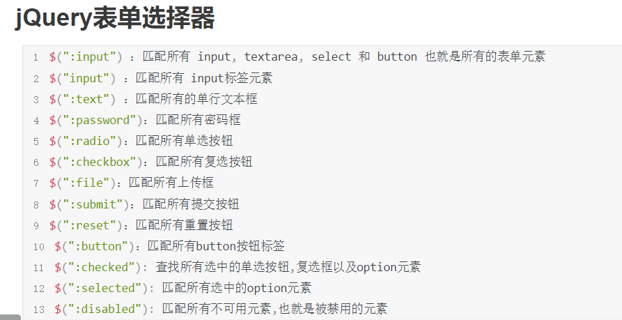

# 第三方库
什么是第三方库？
前端的第三方库往往是用 JS 语言封装好的一些工具，提供一些 API 供开发者使用，以提升开发效率一个完整的中型项目中，往往会直接或间接的依赖上千个第三方库
为什么要学习第三方库？
提升开发效率
降低开发难度
面试中会通过第三方库的熟悉程度考察项目经验
第三方库要学习到什么程度？
某些第三方库需要单独作为课程学习，比如 jQuery、Bootstrap 等大型第三方库
某些第三方库需要在学习其他工具、框架时融合的学习，比如 webpack、node、vue、react 中涉及的大量第三方库
某些第三方库需要在项目实战开发中边学边练，比如 validator、md5、jsonwebtoken 等
你需要对大部分第三方库有原理层面的认识
你需要对一些第三方库有源码层面的认识
前端有哪些常用的第三方库？
下面列出前端开发中常用的第三方库
jQuery：传统的 dom 处理解决方案
Lodash：前端实用函数工具箱
MockJS：数据模拟
BootStrap：快速中后台 UI 库（可部分用于前台）
moment：时间、日期处理
date-fns：时间、日期处理
validator：数据验证
async-validator：异步数据验证
axios：跨平台的远程通信
umi-request：跨平台的远程通信，并可以跟 umi 更好的融合
babel：支持 JS Next，并对其做兼容处理
postCSS：支持 css Next，并对其做兼容处理
ejs：模板引擎
webpack：基于模块化的构建工具
webpack 家族中涉及成百上千的第三方库，其中常用的 20 个以上
vue：JavaScript 框架
vue 全家桶中涉及十来个常用第三方库，用于解决项目中的常见问题
react：降低前端 UI 复杂度的库
react 全家桶中涉及大大小小几十个第三方库，用于解决项目中的常见问题
node：前端的服务器环境
node 中涉及大量的第三方库，用于解决服务器中的常见问题
......
# jQuery 介绍
JavaScript 库 (第三方库)
- 仓库： 可以把很多东西放到这个仓库里面。找东西只需要到仓库里面查找到就可以了。
JavaScript 库： 即 library，是一个封装好的特定的集合（方法和函数）。从封装一大堆函数的角度理解库，就是在这个库中，封装了很多预先定义好的函数在里面，比如动画 animate、hide、show，比如获取元素等。
- 简单理解： 就是一个 JS 文件，里面对我们原生 js 代码进行了封装，存放到里面。这样我们可以快速高效的使用这些封装好的功能了。
比如 jQuery，就是为了快速方便的操作 DOM，里面基本都是函数（方法）。
- 常见的 JavaScript 库：jQuery、Prototype、YUI、Dojo、Ext JS、移动端的 zepto 等，这些库都是对原生 JavaScript 的封装，内部都是用 JavaScript 实现的，我们主要学习的是 jQuery。
# jQuery 的概念
- jQuery 是一个快速、简洁的 JavaScript 库，其设计的宗旨是 “write Less，Do More”，即倡导写更少的代码，做更多的事情。
- j 就是 JavaScript； Query 查询； 意思就是查询 js，把 js 中的 DOM 操作做了封装，我们可以快速的查询使用里面的功能。
- jQuery 封装了 JavaScript 常用的功能代码，优化了 DOM 操作、事件处理、动画设计和 Ajax 交互。
# jQuery 的优点
- 轻量级。核心文件才几十 kb，不会影响页面加载速度。
- 跨浏览器兼容，基本兼容了现在主流的浏览器。
- 链式编程、隐式迭代。
- 对事件、样式、动画支持，大大简化了 DOM 操作。
- 支持插件扩展开发。有着丰富的第三方的插件，例如：树形菜单、日期控件、轮播图等。
- 免费、开源。
# jQuery 的基本使用
<!DOCTYPE html> | |
<html lang="en"> | |
<head> | |
<meta charset="UTF-8"> | |
<meta http-equiv="X-UA-Compatible" content="IE=edge"> | |
<meta name="viewport" content="width=device-width, initial-scale=1.0"> | |
<title>Document</title> | |
<style> | |
div { | |
width: 100px; | |
height: 100px; | |
background: pink; | |
margin-bottom: 10px; | |
} | |
</style> | |
</head> | |
<body> | |
<div>div</div> | |
<div>div</div> | |
<div>div</div> | |
<div>div</div> | |
<!-- 通过 script 标签 src 属性引入外部 js 文件 --> | |
<!-- 注意：引入外部 js 文件的 script 标签里面不要写 js 代码 --> | |
<script src="./js/jquery-3.6.4.min.js"></script> | |
<script> | |
//jQuery 官方网站: https://jquery.com/ | |
//jQuery 的基本使用 | |
// 中文手册：https://jquery.cuishifeng.cn/index.html | |
// 获取 jQuery | |
// https://jquery.com/download/ | |
// 成功引入 jQuery 以后，全局会多一个 jQuery | |
// 另外，jQuery 也可以简写成 $ $ 和 jQuery 是等价的 | |
console.log(jQuery); | |
console.log($); | |
console.log(jQuery === $); | |
console.log(jQuery.prototype); | |
$("div").mouseover(function () { | |
$(this).stop().animate({ | |
width: 200, | |
height: 200, | |
opacity: 0.5, | |
}).siblings("div").stop().animate({ | |
widht: 100, | |
height: 100, | |
opacity: 1 | |
}); | |
$(this).css("background", "skyblue").siblings("div").css("background", "pink"); | |
console.log($(this).index()); | |
}) | |
</script> | |
</body> | |
</html> |
# CDN 库
<!DOCTYPE html> | |
<html lang="en"> | |
<head> | |
<meta charset="UTF-8"> | |
<meta http-equiv="X-UA-Compatible" content="IE=edge"> | |
<meta name="viewport" content="width=device-width, initial-scale=1.0"> | |
<title>Document</title> | |
</head> | |
<body> | |
<!-- <script src="https://cdn. .net/ajax/libs/jquery/3.6.4/jquery.min.js"></script> --> | |
<script src="https://cdn.staticfile.org/jquery/3.6.4/jquery.min.js"></script> | |
<script> | |
//cdn 是内容分发网络 | |
// CDN 的全称是 Content Delivery Network，即内容分发网络。其基本思路是尽可能避开互联网上有可能影响数据传输速度和稳定性的瓶颈和环节，使内容传输得更快、更稳定。通过在网络各处放置节点服务器所构成的在现有的互联网基础之上的一层智能虚拟网络，CDN 系统能够实时地根据网络流量和各节点的连接、负载状况以及到用户的距离和响应时间等综合信息将用户的请求重新导向离用户最近的服务节点上。其目的是使用户可就近取得所需内容，解决 Internet 网络拥挤的状况，提高用户访问网站的响应速度。 | |
// 我们可以通过一些在线的 cdn 库网站，引入在线 jQuery 文件，不需要把 jQuery 文件下载本地 | |
// 使用 cdn 库需要电脑具备上网条件 | |
// 推荐两个 CDN 网站给大家 | |
// BootCDN https://www.bootcdn.cn/ | |
// Staticfile CDN https://staticfile.org/ | |
console.log($); | |
</script> | |
</body> | |
</html> |
# jQuery 的入口函数
jQuery 的入口函数类似于 document 对象 DOMContentLoaded 的事件 DOM 结构加载完毕就会执行
$("带符号的 CSS 选择器")
- 获取符合 CSS 选择器的所有 jQuery 对象 类似 document.querySelectorAll ()
jQuery 的入口函数写法有两种：
第一种（推荐）：
$( function(){} );
$(function () {
console.log("jQuery的入口函数写法第一种");
console.log($("div"));
console.log($("p"));
});
第二种：
$( document ).ready( function(){} );
$(document).ready(function () {
console.log("jQuery的入口函数写法第二种");
console.log($(".one"));
console.log($("#two"));
});
# jQuery 对象的属性
jQuery 对象.length：选择器返回 jQuery 对象中元素的个数
console.log($("div"));
console.log($("div").length);
console.log("");
console.log($(".one"));
console.log($(".one").length);
console.log("");
console.log($("#two"));
console.log($("#two").length);
console.log("");
console.log($(".three"));
console.log($(".three").length);
# jQuery 对象和 DOM 对象的区别与转换
jQuery 对象和 DOM 对象的区别：
通过 $() 或者 调用了 jQuery 提供的 api 方法 (如果 api 方法返回的是 jQuery 对象) 那么得到的对象都是 jQuery 对象
通过相关获取 dom 对象的方法，得到的就是 DOM 对象
jQuery 对象只能使用 jQuery 提供的 api 方法和属性
DOM 对象只能使用 DOM 提供的 api 方法和属性
console.log($("div"));
console.log($("div").width(300));
console.log(document.querySelector("div"));
console.log(document.getElementsByTagName("p")[0]);
console.log("");
console.log("");
建议：我们可以在 jQuery 对象的变量名前面加一个 $ 符号 可以跟普通的对象或者 DOM 对象区分
var $div = $("div");
console.log($div);
$div.height(280);
$div.css("color", "green");
$div.text("呵呵");
// $div.style.color = "red";// 报错// $div.innerText = "哈哈哈";// 不报错，但是没有效果console.log("");
console.log("");
console.log("");
var objP = document.getElementsByTagName("p")[0];
console.log(objP);
objP.innerText = "嘻嘻嘻嘻";
objP.style.color = "purple";
//objP.css ("color", "red");// 报错//objP.text ("呵呵");// 报错console.log("");
console.log("");
jQuery 对象和 DOM 对象的转换 转换成什么对象以后，就可以使用对应对象的方法和属性了
jQuery 对象转成 DOM 对象方式 索引号从 0 开始
方式一（推荐）：
- jQuery 对象 [索引号]
方式二：
- jQuery 对象.get (索引号)
console.log($("ul li"));
console.log($("ul li")[0]);
console.log($("ul li").get(1));
$("ul li")[0].style.color = "red";
$("ul li").get(1).style.color = "green";
console.log("");
console.log("");
DOM 对象转成 jQuery 对象 $(DOM 对象)
var objUl = document.getElementById("myUl");
console.log(objUl);
console.log($(objUl));
$(objUl).css("border", "2px solid blue");
console.log("");
console.log("");
# jQuery 绑定事件，大部分可以使用如下语法
jQuery 对象。不带 on 事件类型 (function (){} )
jQuery 中会有隐式迭代，意思就是如果发现 jQuery 对象不是单个，是一组，jQuery 会帮我们遍历循环
$("button").click(function (e) {
// 因为此种方式绑定以后，函数内部 this 对象指向的对象是 DOM 对象，所以不能 jQuery 提供的 api 方法和属性console.log("this=>", this);
console.log("hello");
this.style.color = "green";
//this.css ("background", "skyblue");// 报错，因为 this 是 dom 对象$(this).css("background", "skyblue");
console.log("");
console.log("");
});
# 基础选择器与层级选择器
基础选择器
$("CSS 选择器") 里面选择器直接写 CSS 选择器即可，但是要使用引号包括 CSS 选择器，另外 CSS 选择器需要带符号
名称 用法 描述：
- ID 选择器 $("#id") 获取指定 ID 的元素
- 全选选择器 $("*") 匹配所有元素
- 类选择器 $(".class") 获取同一类 class 的元素
- 标签选择器 $("div") 获取同一类标签的所有元素
- 并集选择器 $("div,p,li") 获取多个元素
- 交集选择器 $("li.current") 交集元素
层级选择器
层级选择器最常用的两个分别为：后代选择器和子代选择器。
名称 用法 描述：
子代选择器 $("ul>li") 使用 > 号，获取亲儿子层级的元素；注意，并不会获取孙子层级的元素
后代选择器 $("ul li") 使用空格，代表后代选择器，获取 ul 下的所有 li 元素，包括孙子等
// ❤❤❤ $("带符号的 CSS 选择器") 返回符合 CSS 选择器的所有 jQuery 对象console.log($("div"));
console.log($(".nav"));
console.log($("#abc"));
console.log($("div, p, h2, .active"));
console.log($("li"));
console.log($("li.active"));
console.log($("div p"));
console.log($("div > p"));
console.log($("*"));
console.log($("ol li"));
console.log($("ol li:nth-child(2)"));
console.log($("ol li:first-child"));
console.log($("ol li:last-child"));
# 筛选选择器
筛选选择器，顾名思义就是在所有的选项中选择满足条件的进行筛选选择。
常见如下 ：
语法 描述 举例：
:first 获取第一个 li 元素 $("li:first")
:last 获取最后一个 li 元素 $("li:last")
❤:eq (index) 获取索引号为 2 的 li 元素，索引号 index 从 0 开始 $("li:eq (2)")
:odd 获取索引号为奇数的 li 元素，索引号 index 从 0 开始 $("li:odd")
:even 获取索引号为偶数的 li 元素，索引号 index 从 0 开始 $("li:even")
console.log($("li"));
console.log($("ul li"));
console.log($("ul li:first-child"));
console.log($("ul li:last-child"));
console.log($("ul li:nth-child(2)"));
console.log($("ul li:nth-child(even)"));
console.log($("ul li:nth-child(odd)"));
console.log("");
console.log("");
$("ul li:first").css("color", "red");
$("ul li:last").css("color", "blue");
console.log("");
console.log("");
$("ul li:eq(4)").css("background", "lightgreen");
//eq 选择器中可以使用负数，-1 表示倒数第 1 个 -n 表示倒数第 n 个$("ul li:eq(-4)").css("background", "pink");
console.log("");
console.log("");
$("ul li:odd").css("font-weight", "bold");
$("ul li:even").css("font-size", "30px");
# 筛选方法（方法调用要使用 ()）
语法 说明 举例：
❤parent ([selector] ) 查找最近上一级父级
console.log($(".son"));
console.log($(".son").parent());
console.log($(".son").parent(".father"));
console.log("");
console.log("");
❤children ([selector] ) 最近一级 (亲儿子) 子元素选择器
console.log($(".nav"));
console.log($(".nav").children());
console.log($(".nav").children("p"));
console.log("");
console.log("");
console.log("");
❤find (selector) 后代选择器
console.log($(".nav"));
console.log($(".nav").find());
console.log($(".nav").find("p"));
❤siblings ([selector] ) 查找所有兄弟节点，不包括自己本身
console.log($(".item"));
console.log($(".item").siblings());
$("div span").css("color", "red");
$("div span").siblings().css("border", "2px solid blue");
$("div span").siblings("p").css("background", "tomato");
console.log("");
console.log("");
nextAll ([selector] ) 查找当前元素之后所有的同辈 (兄弟) 元素
$("div h1").css("color", "blue");
$("div h1").nextAll().css("border", "2px solid red");
prevAll ([selector] ) 查找当前元素之前所有的同辈 (兄弟) 元素
$("div span").css("color", "red");
$("div span").prevAll().css("background", "lightgreen");
$("div span").prevAll("p").css("font-style", "italic");
hasClass ("类名") 检查当前的元素是否含有某个特定的类，如果有，则返回 true
console.log($("ol li:nth-child(3)"));
console.log($("ol li:nth-child(3)").hasClass("item"));
console.log($("ol li:eq(3)"));
console.log($("ol li:eq(3)").hasClass("item"));
console.log("");
console.log("");
❤eq (index) 找 index 个元素 index 从 0 开始，并且 n 支持负数（表示从后面查找）
var index = 4;
$("ol li").eq(index).css("color", "red");
$("ol li:eq(" + index + ")").css("border", "2px solid purple");
# jQuery 事件注册
jQuery 为我们提供了方便的事件注册机制，是开发人员抑郁操作优缺点如下：
- 优点：操作简单，且不用担心事件覆盖等问题。
- 缺点：无法动态新增的元素绑定事件。
- 但是并且不是所有的事件都可以直接去掉 on, 有对应的方法，比如 oninput 事件就没有
单个事件注册语法：
jQuery 对象。不带 on 的事件名 (匿名函数) 比如：$("div").click (function (){})
其他事件和原生基本一致比如 mouseover,mouseout,blur,focus,change,keydown,keyup,resize,scroll 等
无法使用 jQuery.input () 方式绑定 input 事件
$("div").click(function () {
console.log("div的click事件1111");
});
$("div").click(function () {
console.log("div的click事件2222");
});
$("div").click(function () {
console.log("div的click事件33333");
});
$("div").mouseover(function () {
console.log("div的mouseover事件");
});
$("div").mouseout(function () {
console.log("div的mouseout事件");
});
$("div").mousemove(function () {
console.log("div的mousemove事件");
});
/* $("input").keyup(function () {console.log(this.value);
}); */
// 无法使用 jQuery.input () 方式绑定 input 事件/* $("input").input(function () {console.log(this.value);
}); */
console.log($("ul li"));
$("ul li").click(function () {
$(this).css("background", "skyblue");
});
$("button").click(function () {
var newLi = document.createElement("li");
newLi.innerText = "李二狗";
// console.log($("ul"));// console.log($("ul")[0]);$("ul")[0].appendChild(newLi)
});
# 隐式迭代
概念：因为大部分的 jQuery 方法都支持隐式迭代，隐式迭代的原理是方法的内部存在看不见的遍历，它会对匹配到的所有元素进行循环遍历，执行相应的方法，而无需我们再手动地进行循环，方便我们使用
console.log($("div"));
console.log($("p"));
$("div").css("color", "red");
$("div:odd").css("background", "skyblue");
$("div").click(function () {
console.log("div被点击了");
console.log("this=>", this);
console.log("$(this)=>", $(this));
console.log("");
});
$("p").css("color", "blue");
# jQuery 里面的排他思想与 jQuery 链式编程 (链式操作)
jQuery 里面的排他思想
- 想要多选一的效果，排他思想：当前元素设置样式，其余的兄弟元素清除样式
jQuery 链式编程 (链式操作)
介绍：使用 JavaScript 时要对某个元素进行一系列操作，只能一次一次的操作，然而 jQuery 提供了链式操作方式，可以通过。语法对同一对象多次设置其属性或方法
注意：使用链式编程一定要注意是哪个对象执行样式
概念：jQuery 实现链式调用的原理是每个方法执行完成后都返回了 this 对象，我们使用 JavaScript 简单的实现链式操作
$(".button-box button").click(function () {
// console.log("this=>", this);//jQuery 设置单个 css 属性的方式//jQuery 对象.css ("css 属性名", "css 属性值");/* $(".button-box button").css("background-color", "pink");$(this).css("background-color", "skyblue"); *//* console.log($(this));console.log($(this).siblings("button"));$(this).siblings("button").css("background-color", "pink")$(this).css("background-color", "skyblue"); *//* console.log("$(this)=>", $(this));var res = $(this).css("background-color", "skyblue");console.log("res=>", res);console.log("res.siblings('button')=>", res.siblings('button'));res.siblings('button').css("background-color", "pink"); *//* var res = $(this).css("background-color", "skyblue");res.siblings('button').css("background-color", "pink"); */// $(this).css("background-color", "skyblue").siblings('button').css("background-color", "pink");$(this)
.css("background-color", "skyblue")
.siblings('button')
.css("background-color", "pink");
});
# jQuery 获取索引号 index ()
jQuery 对象.index ([selector] )
搜索匹配的元素，并返回相应元素的索引值，从 0 开始计数。
如果不给 .index () 方法传递参数，那么返回值就是这个 jQuery 对象集合中第一个元素相对于其同辈元素的位置。
注意细节：
❤❤❤不传递参数，返回这个元素在同辈 (所有类型的兄弟元素) 中的索引位置 ( 不传递参数这种方式用的最多 )
传递一个 DOM 对象，返回这个对象在原先集合中的索引位置
传递一个 jQuery 对象，返回这个对象在原先集合中的索引位置
传递一组 jQuery 对象，返回这组对象中第一个元素在原先集合中的索引位置
$("ul li").click(function () {
console.log($(this).index());
});
console.log($("ul"));
console.log($("ul").index());
console.log($("ul").index(document.getElementById("bar")));
console.log("");
console.log($("ul li").index(document.getElementById("baz")));
console.log("");
console.log($("ul li").index($("#baz")));
console.log("");
console.log($("ul li").index($(".abc")));
# jQuery 样式操作
jQuery 中常用的样式操作有两种：css () 和 操作类类方法
# 方法 1: css 方法
jQuery 可以使用 css 方法来获取与设置元素样式
参数只写属性名，则是返回属性值
jQuery 对象.css ("css 属性名")
// 获取元素的单个 color 属性值console.log($("div").css("color"));
console.log($("div").css("font-size"));
console.log($("div").css("fontSize"));
console.log($("div").css("text-align"));
console.log($("div").css("textAlign"));
console.log("");
console.log("");
获取元素的多个 css 属性样式值
- jQuery 对象.css (["css 属性名 1","css 属性名 2","css 属性名 3"...])
参数是属性名，属性值，逗号分隔，是设置一组样式，属性名必须加引号，属性值如果是数字可以不用跟单位和引号
设置单个 CSS 属性语法：
jQuery 对象.css ("css 属性名", "css 属性值")
$("div").css("width", 300);
$("div").css("height", "200px");
$("div").css("fontSize", "20px");
参数可以是对象形式，方便设置多组样式。属性名和属性值用冒号隔开，属性名必须加引号，如果是数字可以不用跟单位和引号
设置多个 CSS 属性语法：
jQuery对象.css( {
"css属性名1": "css属性值1",
"css属性名2": "css属性值2",
"css属性名3": "css属性值3",
...} )
$("div").css({
border: "5px solid green",
"font-style": "italic",
fontWeight: "bold"
});
注意：如果是复合属性可以采取驼峰命名法，比如 font-size 写成 fontSize; 如果属性值不是数字，则需要加引号
jquery 常用的三种设置类样式方法：
添加类：
- jQuery 对象.addClass ("类名");
删除类：
- jQuery 对象.removeClass ("类名");
切换类：
- jQuery 对象.toggleClass ("类名");
$("button").eq(0).click(function () {
// $("div").addClass("two");// $("div").addClass("two three");$("div").addClass("two").addClass("three");
});
$("button").eq(1).click(function () {
$("div").removeClass("three");
});
$("button").eq(2).click(function () {
$("div").toggleClass("two");
});
# jQuery 动画效果
显示隐藏：show () /hide () /toggle () ;
显示语法规范：
- show( [speed,[easing,[fn]] ] )
显示参数：
- 参数都可以省略，如果参数都省略表示无动画直接显示
- speed: 三种预定速度之一的字符串 ("slow","normal", or "fast") 或表示动画时长的毫秒数值 (如：1000)
- easing:(Optional) 用来指定切换效果，默认是 "swing"，可用参数 "linear"
- fn: 回调函数，在动画完成时执行的函数，每个元素执行一次
隐藏语法规范：
- hide( [speed,[easing,[fn]] ] )
隐藏参数：
- 参数都可以省略，如果参数都省略表示无动画直接显示
- speed: 三种预定速度之一的字符串 ("slow","normal", or "fast") 或表示动画时长的毫秒数值 (如：1000)
- easing:(Optional) 用来指定切换效果，默认是 "swing"，可用参数 "linear"
- fn: 回调函数，在动画完成时执行的函数，每个元素执行一次
切换语法规范：
- toggle( [speed,[easing,[fn]] ] )
切换参数：
- 参数都可以省略，表示无动画直接显示
- speed: 三种预定速度之一的字符串 ("slow","normal", or "fast") 或表示动画时长的毫秒数值 (如：1000)
- easing:(Optional) 用来指定切换效果，默认是 "swing"，可用参数 "linear"
- fn: 回调函数，在动画完成时执行的函数，每个元素执行一次
建议：平时一般不带参数，直接显示隐藏即可
注意：想要触发 jQuery 动画的话，隐藏元素，必须使用 display:none; 使用 visibility:hidden 以及 opacity:0 无效，（且不能直接与其他 display 值一起用，可通过再嵌套一层 div 解决）
$("button").eq(0).click(function () {
// $("div").show();$("div").show(1000, "linear", function () {
$(this).css("backgroundColor", "skyblue");
});
});
$("button").eq(1).click(function () {
$("div").hide();
// $("div").hide("slow");// $("div").hide("fast");// $("div").hide("normal");// $("div").hide(1234);// $("div").hide(2000);// $("div").hide(2000, "linear");/* $("div").hide (2000, "linear", function () {console.log ("隐藏完毕～～");}); */
// $("div").hide("linear");/* $("div").hide (function () {console.log ("隐藏完毕～～");}); */
/* $("div").hide (1500, function () {console.log ("隐藏完毕～～");}); */
/* $("div").hide ("linear", function () {console.log ("隐藏完毕～～");}); */
});
$("button").eq(2).click(function () {
// $("div").toggle();// $("div").toggle(500);// $("div").toggle(500, "linear");$("div").toggle(500, "linear", function () {
console.log("切换完毕");
});
});
上滑下滑：slideDown () /slideUp () /slideToggle () ;
<!DOCTYPE html><html lang="en"><head><meta charset="UTF-8"><meta http-equiv="X-UA-Compatible" content="IE=edge"><meta name="viewport" content="width=device-width, initial-scale=1.0"><title>Document</title>
<style>
div {
width: 150px;
height: 150px;
background: pink;
display: none;
}</style></head><body><button>上滑slideUp()</button>
<button>下滑slideDown()</button>
<button>上滑下滑切换slideToggle()</button>
<br /><br /><div>div的内容</div>
<script src="./js/jquery-3.6.4.min.js"></script>
<script>
$("button").eq(0).click(function () {
// $("div").slideUp();$("div").slideUp(1500, "linear", function () {
console.log("上滑完毕");
});
});
$("button").eq(1).click(function () {
$("div").slideDown(5000);
});
$("button").eq(2).click(function () {
$("div").slideToggle();
});
</script></body></html>淡入淡出：fadeIn () /fadeOut () /fadeToggle () /fadeTo () ;
<!DOCTYPE html><html lang="en"><head><meta charset="UTF-8"><meta http-equiv="X-UA-Compatible" content="IE=edge"><meta name="viewport" content="width=device-width, initial-scale=1.0"><title>Document</title>
<style>
div {
width: 150px;
height: 150px;
background: red;
display: none;
}</style></head><body><button>淡入fadeIn( speed, easing, fn )</button>
<button>淡出fadeOut( speed, easing, fn )</button>
<br /><br /><button>淡入淡出切换fadeToggle( speed, easing, fn )</button>
<button>指定透明度fadeTo( speed, opacity , easing, fn )</button>
<br /><br /><div>div的内容</div>
<script src="./js/jquery-3.6.4.min.js"></script>
<script>
$("button").eq(0).click(function () {
$("div").fadeIn(function () {
console.log("淡入完毕");
// $("div").css("opacity", 1);});
});
$("button").eq(1).click(function () {
// $("div").fadeOut();// $("div").fadeOut(2000);$("div").fadeOut(2000, "linear", function () {
console.log("淡出完毕");
});
});
$("button").eq(2).click(function () {
$("div").fadeToggle(function () {
console.log("淡入淡出完毕");
});
});
$("button").eq(3).click(function () {
// 指定透明度 fadeTo (speed, opacity , easing, fn)// 注意：使用 fadeTo () 方法的时候，speed, opacity 这两个参数必须写// $("div").fadeTo();// $("div").fadeTo(0.5);// $("div").fadeTo(1000, 0.5);// $("div").fadeTo(1000, 0.5, "linear");$("div").fadeTo(1000, 0.5, "linear", function () {
console.log("哈哈哈");
});
});
</script></body></html>自定义动画：animate () ;
/* jQuery 对象.animate ( {css 属性名 1: css 属性值 1,
css 属性名 2: css 属性值 2,
css 属性名 3: css 属性值 3,
...
} [,speed] [, easing] [, fn] ) */
- 注意：默认 animate () 方法对颜色相关属性取值是无法实现动画功能 但是可以引入一个 jQuery 插件包，扩展该功能 jquery.color.js 能解决部分颜色动画问题 因为 jQuery 插件是基于 jQuery, 所以需要先有 jQuery
- 另外 animate () 并不是所有 css 属性都可以实现动画，比如 display:block, display:none
$("div").click(function () {
/* $("div").animate({width: 300
}); */
/* $("div").animate({width: 300,
height: 50
}); */
/* $("div").animate({width: 300,
height: 50,
left: 230
}, 2000); */
/* $("div").animate({width: 300,
height: 50,
left: 230
}, 2000, "linear"); */
/* $("div").animate ({width: 300,
height: 50,
left: 230
}, 2000, "linear", function () {console.log ("动画执行完毕");}); */
/* $("div").animate({width: 300
}, 2000, function () {$("div").animate({height: 80
}, 500)
}); */
// 注意：默认 animate () 方法对颜色相关属性取值是无法实现动画功能 但是可以引入一个 jQuery 插件包，扩展该功能 jquery.color.js 能解决部分颜色动画问题 因为 jQuery 插件是基于 jQuery, 所以需要先有 jQuery// 另外 animate () 并不是所有 css 属性都可以实现动画，比如 display:block, display:none$("div").animate({
// backgroundColor: "blue",// backgroundColor: "skyblue",backgroundColor: "#1a73e8",
width: 300,
top: 5,
fontSize: 40,
// color: "orange"// color: "purple"// color: "green"color: "rgb(1, 137, 124)",
display: "none"
}, 1000);
});
带有动画的返回顶部
<!DOCTYPE html><html lang="en"><head><meta charset="UTF-8"><meta http-equiv="X-UA-Compatible" content="IE=edge"><meta name="viewport" content="width=device-width, initial-scale=1.0"><title>Document</title>
<style>
body {
height: 4000px;
}.box {
position: fixed;
right: 50px;
top: 45%;
}</style></head><body><div class="box"><button>返回顶部</button><br /><br />
<button>返回100</button><br /><br />
<button>返回500</button><br /><br />
<button>返回999</button><br /><br />
</div><script src="./js/jquery-3.6.4.min.js"></script>
<script>
$("button").eq(0).click(function () {
$("html").stop().animate({
scrollTop: 0
}, 2000, "linear", function () {
console.log("回到顶部啦,好开心啊");
});
});
$("button").eq(1).click(function () {
$("html").stop().animate({
scrollTop: 100
});
});
$("button").eq(2).click(function () {
$("html").stop().animate({
scrollTop: 500
});
});
$("button").eq(3).click(function () {
$("html").stop().animate({
scrollTop: 999
});
});
</script></body></html>
# 停止动画队列
jQuery 中的动画如果同时存在多个需要执行，那么这些动画就会排队形成队列，一个一个的执行
jQuery 对象.stop () 停止所有在指定元素上正在运行的动画 一般放在动画方法的前面
$(this).find("ul").stop().slideToggle(800);
# 事件切换
hover () 方法
jQuery 对象.hover (鼠标移到元素上要触发的函数，鼠标移出元素要触发的函数);
<!DOCTYPE html><html lang="en"><head><meta charset="UTF-8"><meta name="viewport" content="width=device-width, initial-scale=1.0"><meta http-equiv="X-UA-Compatible" content="ie=edge"><title>Document</title>
<style>
* {
margin: 0;
padding: 0;
}li {
list-style-type: none;
}a {
text-decoration: none;
font-size: 14px;
}.nav {
margin: 100px;
}.nav>li {
position: relative;
float: left;
width: 80px;
height: 41px;
text-align: center;
}.nav li a {
display: block;
width: 100%;
height: 100%;
line-height: 41px;
color: #333;
}.nav>li>a:hover {
background-color: #eee;
}.nav ul {
display: none;
position: absolute;
top: 41px;
left: 0;
width: 100%;
border-left: 1px solid #FECC5B;
border-right: 1px solid #FECC5B;
}.nav ul li {
border-bottom: 1px solid #FECC5B;
}.nav ul li a:hover {
background-color: #FFF5DA;
}</style></head><body><ul class="nav"><li><a href="#">微博</a>
<ul><li><a href="">私信</a>
</li><li><a href="">评论</a>
</li><li><a href="">@我</a>
</li></ul></li><li><a href="#">微博</a>
<ul><li><a href="">私信</a>
</li><li><a href="">评论</a>
</li><li><a href="">@我</a>
</li></ul></li><li><a href="#">微博</a>
<ul><li><a href="">私信</a>
</li><li><a href="">评论</a>
</li><li><a href="">@我</a>
</li></ul></li><li><a href="#">微博</a>
<ul><li><a href="">私信</a>
</li><li><a href="">评论</a>
</li><li><a href="">@我</a>
</li></ul></li></ul><style>
div {
width: 150px;
height: 150px;
background: skyblue;
}</style><div>div的内容</div>
<script src="./js/jquery-3.6.4.min.js"></script>
<script>
//jQuery 对象.hover (鼠标移到元素上要触发的函数，鼠标移出元素要触发的函数);/* $("div").mouseover (function () {console.log ("div 的 mouseover1111");});
$("div").mouseout (function () {console.log ("div 的 mouseout1111");}); */
/* $("div").hover (function () {console.log ("div 的 mouseover2222");}, function () {console.log ("div 的 mouseout2222");}); */
//jQuery 对象.hover (鼠标移到元素上或者移出元素要触发的函数);/* $("div").hover (function () {console.log ("嘻嘻嘻嘻");}); */
/* $(".nav > li").mouseover(function () {$(this).find("ul").show();});
$(".nav > li").mouseout(function () {$(this).find("ul").hide();}); */
/* $(".nav > li").hover(function () {$(this).find("ul").show();}, function () {$(this).find("ul").hide();}); */
$(".nav > li").hover(function () {
$(this).find("ul").toggle();
});
/* $(".nav > li").hover(function () {// $(this).find("ul").slideToggle();$(this).find("ul").fadeToggle();}); */
</script></body></html>
# jQuery 文本内容操作
html () 相当于 innerHTML
- 操作标签内容，可以解析 HTML 标签
text () 相当于 innerText
- 操作标签内容，无法解析 HTML 标签
val () 相当于 value
- 用于操作表单控件的 value 属性值
<!DOCTYPE html><html lang="en"><head><meta charset="UTF-8"><meta http-equiv="X-UA-Compatible" content="IE=edge"><meta name="viewport" content="width=device-width, initial-scale=1.0"><title>Document</title>
<style>
div {
height: 100px;
border: 2px solid red;
}div span {
background: orange;
}</style></head><body><div><span>div里面的span元素</span>
</div><br /><br /><input type="text" value="马冬梅" /><br /><br /><textarea>请来个自我介绍吧</textarea>
<br /><br /><button>获取文本值</button>
<button>设置文本值</button>
<script src="./js/jquery-3.6.4.min.js"></script>
<script>
//jQuery 文本内容操作//html () 相当于 innerHTML 操作标签内容，可以解析 HTML 标签//text () 相当于 innerText 操作标签内容，无法解析 HTML 标签//val () 相当于 value 用于操作表单控件的 value 属性值$("button").eq(0).click(function () {
console.log($("div").html());
console.log($("div").text());
console.log($("div").val());
console.log($("input").val());
console.log($("textarea").val());
});
$("button").eq(1).click(function () {
// $("div").html ("<h2><i > 我是标题 2 标签 & lt;/i></h2>")$("div").text("<h2><i>我是标题2标签</i></h2>")
$("input").val("去你大爷的");
$("textarea").val("哈哈哈哈");
});
</script></body></html>
# jQuery 属性操作
jQuery 对象.prop ();
- 注意：prop () 除了普通属性 (自带属性) 操作，更适合操作表单属性：disabled /checked/selected 等。也就是自身属性
jQuery 对象.attr ();
- 注意：attr () 除了普通属性 (自带属性) 操作，也可以操作自定义属性，但是更适合操作自定义属性。
jQuery 对象.removeAttr ("自带属性名或者自定义属性名")
- 删除指定的自带属性或者自定义属性
<!DOCTYPE html><html lang="en"><head><meta charset="UTF-8"><meta http-equiv="X-UA-Compatible" content="IE=edge"><meta name="viewport" content="width=device-width, initial-scale=1.0"><title>Document</title>
<style>
div {
width: 500px;
height: 100px;
background: pink;
}</style></head><body><div class="div1" id="abc" data-index="10">div的内容</div>
<br /><input type="checkbox" checked="checked" />写代码<br /><br /><button>获取自带属性</button>
<button>设置自带属性</button>
<button>获取自定义属性</button>
<button>设置自定义属性</button>
<button>删除属性</button>
<br /><br /><button>获取复选框的选中状态</button>
<button>设置复选框的选中状态</button>
<script src="./js/jquery-3.6.4.min.js"></script>
<script>
//jQuery 属性操作主要有如下两个方法//jQuery 对象.prop (); 注意： prop () 除了普通属性 (自带属性) 操作，更适合操作表单属性：disabled /checked/selected 等。 也就是自身属性//jQuery 对象.attr (); 注意： attr () 除了普通属性 (自带属性) 操作，也可以操作自定义属性，但是更适合操作自定义属性。//jQuery 对象.removeAttr ("自带属性名或者自定义属性名") 删除指定的自带属性或者自定义属性$("button").eq(0).click(function () {
console.log($("div").prop("class"));
console.log($("div").prop("id"));
console.log($("div").prop("data-index"));
console.log($("input").prop("checked"));
console.log("");
});
$("button").eq(1).click(function () {
$("div").prop("class", "myDiv");
$("div").prop("id", "qwe");
$("div").prop("data-index", 20);
$("div").prop("data-username", "zhangsan");
$("input").prop("checked", false);
});
$("button").eq(2).click(function () {
console.log($("div").attr("class"));
console.log($("div").attr("id"));
console.log($("div").attr("data-index"));
console.log($("input").attr("checked"));
console.log("");
});
$("button").eq(3).click(function () {
$("div").attr("class", "myDiv");
$("div").attr("id", "qwe");
$("div").attr("data-index", 20);
$("div").attr("data-username", "zhangsan");
$("input").attr("checked", false);
});
$("button").eq(4).click(function () {
$("div").removeAttr("class");
$("div").removeAttr("data-index");
});
$("button").eq(5).click(function () {
console.log($("input").prop("checked"));
console.log($("input").attr("checked"));
});
$("button").eq(6).click(function () {
$("input").prop("checked", false);
// $("input").attr("checked", false);});
</script></body></html>
# jQuery 元素操作 (节点操作)
创建元素，创建完毕以后，方法会返回 jQuery 对象
- $("< 标签名 标签属性名 =' 标签属性值 '> 标签内容 </ 标签名 >")
- $("< 标签名 标签属性名 =' 标签属性值 '/>")
内部添加
- jQuery 对象.append ("内容"); 把内容放入匹配元素内部最后面，类似原生中的 appendChild
- jQuery 对象.prepend ("内容"); 把内容放入匹配元素内部最前面
外部添加
- jQuery 对象.before ("内容") 把内容放入目标元素前面
- jQuery 对象.after ("内容") 把内容放入目标元素后面
- 注意：
- 内部添加元素，生成之后，它们是父子关系
- 外部添加元素，生成之后，它们是兄弟关系
删除元素
- jQuery 对象.remove () 删除指定的 jQuery 元素本身
清空标签内容
- jQuery 对象.empty () 删除指定的 jQuery 元素集合中所有的子节点
- jQuery 对象.html ("") 清空指定的 jQuery 元素内容
- jQuery 对象.text ("") 清空指定的 jQuery 元素内容
- jQuery 对象.val ("") 清空指定的表单元素 value 值
克隆元素
- jQuery 对象.clone ([true]) 谁调用这个方法就会将当前的元素进行克隆一份
- 参数说明：
- true：可缺省的，如果带 true 这个参数，表示克隆元素的本身的同时还会将该元素身上绑定的事件也会克隆。
- 但是如果没有带 true 这个参数或者参数为 false，它只会克隆元素本身不会克隆其事件。
<!DOCTYPE html><html lang="en"><head><meta charset="UTF-8"><meta http-equiv="X-UA-Compatible" content="IE=edge"><meta name="viewport" content="width=device-width, initial-scale=1.0"><title>Document</title>
<style>
ul {
border: 2px solid red;
}.content {
border: 2px solid blue;
padding: 20px;
}</style></head><body><ul><li>苹果<span>span</span>
<b>bbb</b>
<ol><li>iphoneX</li>
<li>iphone11</li>
<li>iphone12</li>
<li>iphone13</li>
<li>iphone14</li>
</ol></li><li>哈密瓜</li>
<li>冬瓜</li>
</ul><div class="content">content的内容</div>
<br /><br /><input type="text" value="张三" /><br /><br /><button>创建元素(内部添加)</button>
<button>创建元素(外部添加)</button>
<button>删除元素</button>
<button>清空标签内容</button>
<button>克隆元素clone()</button>
<button>克隆元素clone(true)</button>
<script src="./js/jquery-3.6.4.min.js"></script>
<script>
// 创建元素 创建完毕以后，方法会返回 jQuery 对象// $("< 标签名 标签属性名 =' 标签属性值 '> 标签内容 & lt;/ 标签名 >")// $("< 标签名 标签属性名 =' 标签属性值 '/>")// 内部添加//jQuery 对象.append ("内容"); 把内容放入匹配元素内部最后面，类似原生中的 appendChild//jQuery 对象.prepend ("内容"); 把内容放入匹配元素内部最前面// 外部添加//jQuery 对象.before ("内容") 把内容放入目标元素前面//jQuery 对象.after ("内容") 把内容放入目标元素后面// 注意:// ①内部添加元素，生成之后，它们是父子关系// ②外部添加元素，生成之后，它们是兄弟关系// 删除元素//jQuery 对象.remove () // 删除指定的 jQuery 元素本身// 清空标签内容//jQuery 对象.empty () // 删除指定的 jQuery 元素集合中所有的子节点//jQuery 对象.html ("") // 清空指定的 jQuery 元素内容//jQuery 对象.text ("") // 清空指定的 jQuery 元素内容//jQuery 对象.val ("") // 清空指定的表单元素 value 值// 克隆元素/*jQuery 对象.clone ([true]) 谁调用这个方法就会将当前的元素进行克隆一份
参数说明：
true：可缺省的，如果带 true 这个参数
表示克隆元素的本身的同时还会将该元素身上绑定的事件也会克隆.
但是如果没有带 true 这个参数或者参数为 false，
它只会克隆元素本身不会克隆其事件。
*/
$("button").eq(0).click(function () {
var $newLi1 = $("<li>");
$("ul").append($newLi1);
var $newLi2 = $("<li></li>");
$("ul").append($newLi2);
var $newLi3 = $("<li>西瓜</li>");
$("ul").append($newLi3);
var $newLi4 = $("<li></li>");
$newLi4.text("南瓜")
$newLi4.css("color", "red");
$newLi4.click(function () {
$(this).css("backgroundColor", "skyblue");
});
$("ul").prepend($newLi4);
});
$("button").eq(1).click(function () {
var $newInput1 = $("<input>");
$(".content").before($newInput1);
var $newInput2 = $("<input></input>");
$(".content").after($newInput2);
var $newInput3 = $("<input type='radio' value='男'/>");
$(".content").after($newInput3);
var $newH = $("<h2>h2h2h2</h2><h3>h3h3h3</h3>")
$(".content").after($newH);
});
$("button").eq(2).click(function () {
// $("ul li").eq(0).remove();$("ul li:first").remove();
});
$("button").eq(3).click(function () {
// $("ul").empty();// $(".content").empty();// $("input").empty();$("ul").html("");
$(".content").text("");
$("input").val("");
});
$("ul > li").click(function () {
console.log("li的click事件");
})
$("ul > li").hover(function () {
console.log("li的mouseover事件");
}, function () {
console.log("li的mouseout事件");
})
$("button").eq(4).click(function () {
var $cloneEle = $("ul > li:first").clone();
$("ul").prepend($cloneEle);
});
$("button").eq(5).click(function () {
var $cloneEle = $("ul > li:first").clone(true);
$("ul").append($cloneEle);
});
</script></body></html>
# jQuery 替换元素
语法：
- jQuery 对象.replaceWith (content) content 接受一个用来插入的内容，可以是 HTML 字符串，DOM 元素，或者 jQuery 对象。
<!DOCTYPE html><html lang="en"><head><meta charset="UTF-8"><meta http-equiv="X-UA-Compatible" content="IE=edge"><meta name="viewport" content="width=device-width, initial-scale=1.0"><title>Document</title>
<style>
p {
background: orange;
}</style></head><body><p>段落1</p>
<p>段落2</p>
<p>段落3</p>
<strong style="background:pink">我是strong标签</strong>
<br /><br /><em style="background:skyblue">我是倾斜标签</em>
<br /><br /><button>replaceWith按钮1</button>
<button>replaceWith按钮2</button>
<button>replaceWith按钮3</button>
<script src="./js/jquery-3.6.4.min.js"></script>
<script>
// 语法：//jQuery 对象.replaceWith (content) content 接受一个用来插入的内容，可以是 HTML 字符串，DOM 元素，或者 jQuery 对象。$("button").eq(0).click(function () {
$("p, strong").replaceWith("<h2>小猪佩奇</h2>");
});
$("button").eq(1).click(function () {
/* var newInput = document.createElement("input");$("p").replaceWith(newInput); */$("p").replaceWith(document.querySelector("em"));
});
$("button").eq(2).click(function () {
$("p").replaceWith($("em"));
});
</script></body></html>
# jQuery 遍历元素 (难点，重点)
jQuer 遍历元素语法
- jQuery 对象.each (function ( 索引号，dom 对象){})
- 注意: function 里面也可以使用 this, this 指向 dom 对象
<!DOCTYPE html><html lang="en"><head><meta charset="UTF-8"><meta http-equiv="X-UA-Compatible" content="IE=edge"><meta name="viewport" content="width=device-width, initial-scale=1.0"><title>Document</title>
</head><body><input type="checkbox" value="game" />打游戏<input type="checkbox" value="dance" />跳舞<input type="checkbox" value="rap" />rap<input type="checkbox" value="basketball" />打篮球<input type="checkbox" value="music" />music<br /><br /><button>按钮</button>
<p></p>
<script src="./js/jquery-3.6.4.min.js"></script>
<script>
// 点击按钮，可以获取所有选中复选框的 value 值/* $("button").click(function () {// console.log($("input").prop("checked"));var arr = [];
for (var i = 0; i < $("input").length; i++) {// console.log($("input")[i]);// console.log($("input")[i].checked);// console.log($($("input")[i]));// console.log($($("input")[i]).prop("checked"));// console.log("");if ($("input")[i].checked) {arr.push($("input")[i].value);}
}
$("p").text(arr.join("-"));}); */
//jQuer 遍历元素语法//jQuery 对象.each (function ( 索引号，dom 对象){})// 注意: function 里面也可以使用 this, this 指向 dom 对象/* $("button").click(function () {var arr = [];
$("input").each(function (index, domEle) {if (this.checked) {arr.push(this.value)
}
});
$("p").text(arr.join("-"));}); */
$("button").click(function () {
var arr = [];
$("input").each(function (index, domEle) {
if ($(this).prop("checked")) {
arr.push($(this).val())
}});
$("p").text(arr.join("-"));
});
</script></body></html>
# jQuery 遍历数组 ，遍历对象，遍历 jQuery 对象
jQuery 提供了 $.each () 方法，可以用于遍历数组或者对象或者 jQuery 对象
$.each (数组或者对象或者 jQuery 对象，function (参数 1, 参数 2){})
<!DOCTYPE html>
<html lang="en">
<head>
<meta charset="UTF-8">
<meta http-equiv="X-UA-Compatible" content="IE=edge">
<meta name="viewport" content="width=device-width, initial-scale=1.0">
<title>Document</title>
<style>
div {width: 100px;
height: 100px;
}</style>
</head>
<body>
<div style="background-color:pink">div1</div>
<div style="background-color:skyblue">div2</div>
<div style="background-color:lightgreen">div3</div>
<div style="background-color:aqua">div4</div>
<div style="background-color:orange">div5</div>
<div style="background-color:purple">div6</div>
<script src="./js/jquery-3.6.4.min.js"></script>
<script>
//jQuery 提供了 $.each () 方法，可以用于遍历数组或者对象或者 jQuery 对象// $.each (数组或者对象或者 jQuery 对象，function (参数 1, 参数 2){})var arr = [50, "abc", true, 96, 32];
$.each(arr, function (index, item) {
console.log(index, item);
});
console.log("");
console.log("");
var obj = {
id: 1,
uname: "zhangsan",
age: 23,
sex: "男"
};
$.each(obj, function (index, item) {
console.log(index, item);
});
console.log("");
console.log("");
$.each($("div"), function (index, domEle) {
// console.log(index, domEle);console.log($(domEle).css("background-color"));
console.log($(domEle).html());
console.log($(domEle).text());
console.log("");
});
</script>
</body>
</html>
# jQuery 表单选择器

<!DOCTYPE html> | |
<html lang="en"> | |
<head> | |
<meta charset="UTF-8"> | |
<meta http-equiv="X-UA-Compatible" content="IE=edge"> | |
<meta name="viewport" content="width=device-width, initial-scale=1.0"> | |
<title>Document</title> | |
</head> | |
<body> | |
<form action="index.php" method="get"> | |
<p>用户名:<input type="text" /></p> | |
<p>密 码:<input type="password" /></p> | |
<p>性 别: | |
<input type="radio" checked="checked" />男 | |
<input type="radio" />女 | |
</p> | |
<p>爱 好: | |
<input type="checkbox" checked="checked" />吃饭 | |
<input type="checkbox" checked="checked" />睡觉 | |
<input type="checkbox" />打代码 | |
<input type="checkbox" />听歌 | |
<input type="checkbox" checked="checked" />看电影 | |
</p> | |
<p> | |
图 片: | |
<input type="file" /> | |
</p> | |
<p>省 份: | |
<!-- multiple 属性允许多选，可以按 ctrl 键或者 shift 键配合鼠标左键点击 --> | |
<!-- size 设置显示的选项个数 --> | |
<select multiple="multiple" size="5"> | |
<option selected="selected">广东省</option> | |
<option>广西自治区</option> | |
<option selected="selected">湖南省</option> | |
<option>湖北省</option> | |
<option>上海市</option> | |
<option selected="selected">重庆市</option> | |
<option>四川省</option> | |
</select> | |
</p> | |
<p> | |
介 绍: | |
<textarea></textarea> | |
</p> | |
<p> | |
<!-- 隐藏域：在页面中不会显示，但是提交数据的时候，可以提交到后台 --> | |
<input type="hidden" value="123xcvsdfxcv" /> | |
</p> | |
<p> | |
<input type="reset" value="重新填写" /> | |
<input type="reset" value="重填" disabled="disabled" /> | |
<input type="submit" value="提交数据" /> | |
<input type="button" value="普通按钮" /> | |
<button type="submit">提交按钮</button> | |
<button type="button">普通按钮</button> | |
<button type="reset">重置按钮</button> | |
</p> | |
</form> | |
<script src="./js/jquery-3.6.4.js"></script> | |
<script> | |
//jQuery 表单选择器 | |
// $(":input") ：匹配所有 input, textarea, select 和 button 也就是所有的表单元素 | |
// $("input") ：匹配所有 input 标签元素 | |
// $(":text") ：匹配所有的单行文本框 | |
// $(":password")：匹配所有密码框 | |
// $(":radio")：匹配所有单选按钮 | |
// $(":checkbox")：匹配所有复选按钮 | |
// $(":file")：匹配所有上传框 | |
// $(":submit")：匹配所有提交按钮 | |
// $(":reset")：匹配所有重置按钮 | |
// $(":button")：匹配所有 button 按钮标签 | |
// $(":checked"): 查找所有选中的单选按钮，复选框以及 option 元素 | |
// $(":selected"): 匹配所有选中的 option 元素 | |
// $(":disabled"): 匹配所有不可用元素，也就是被禁用的元素 | |
console.log($(":input")); | |
console.log($("input")); | |
console.log($(":text")); | |
console.log($(":radio")); | |
console.log($(":checkbox")); | |
console.log($(":checked")); | |
console.log($(":checkbox:checked")); // 选中的复选框 | |
console.log($(":selected")); // 选中的下拉框选项 | |
</script> | |
</body> | |
</html> |
# 返回指定的祖先元素
jQuery 对象.parents ([selector] ) 获取所有的父辈元素，但是父辈元素中不包含 document 对象
<!DOCTYPE html><html lang="en"><head><meta charset="UTF-8"><meta http-equiv="X-UA-Compatible" content="IE=edge"><meta name="viewport" content="width=device-width, initial-scale=1.0"><title>Document</title>
</head><body><div class="one"><div class="two"><div class="three"><div class="four">第一个four元素</div>
</div></div></div><div class="box1"><div class="box2"><div class="box3"><div class="four">第二个four元素</div>
</div></div></div><script src="./js/jquery-3.6.4.js"></script>
<script>
//jQuery 对象.parents ([selector] ) 获取所有的父辈元素，但是父辈元素中不包含 document 对象console.log($(".four"));
console.log($(".four").parent());
console.log($(".four").parent().parent());
console.log($(".four").parent().parent().parent());
console.log($(".four").parent().parent().parent().parent());
console.log($(".four").parent().parent().parent().parent().parent());
console.log($(".four").parent().parent().parent().parent().parent().parent());
console.log($(".four").parent().parent().parent().parent().parent().parent().parent());
console.log("");
console.log("");
console.log($(".four").parents());
console.log($(".four").parents(".box2"));
console.log($(".four").parents(".box2,.two"));
</script></body></html>
# jQuery 尺寸操作
jQuery 尺寸操作包括元素宽高的获取和设置，且不一样的 API 对应不一样的盒子模型。
语法 用法：
width () /height () 获取匹配元素宽度和高度值只算 width /height
width (值) /height ( 值 ) 设置匹配元素宽度和高度值只算 width /height
innerWidth () /innerHeight () 获取匹配元素宽度和高度值包含 padding
outerWidth () /outerHeight () 获取匹配元素宽度和高度值包含 padding、border
outerWidth (true) /outerHeight (true) 获取匹配元素宽度和高度值包含 padding、border、 margin
注意：
以上参数为空，则是获取相应值，返回的是数字型
如果参数为数字，则是修改 (设置) 相应值
参数可以不必写单位
有了这套 API 我们将可以快速获取和设置的宽高，至于其他属性想要获取和设置，还要使用 css () 等方法配合。
<!DOCTYPE html><html lang="en"><head><meta charset="UTF-8"><meta http-equiv="X-UA-Compatible" content="IE=edge"><meta name="viewport" content="width=device-width, initial-scale=1.0"><title>Document</title>
<style>
* {
margin: 0;
padding: 0;
}div {
height: 120px;
background: red;
border: 5px solid blue;
padding: 8px;
margin: 6px;
}</style></head><body><div style="width: 300px">div的内容</div>
<button>获取元素的尺寸</button>
<button>设置元素的尺寸</button>
<script src="./js/jquery-3.6.4.js"></script>
<script>
//jQuery 尺寸操作//jQuery 尺寸操作包括元素宽高的获取和设置，且不一样的 API 对应不一样的盒子模型。// 语法 用法//width () /height () 获取匹配元素宽度和高度值只算 width /height//width (值) /height ( 值 ) 设置匹配元素宽度和高度值只算 width /height//innerWidth () /innerHeight () 获取匹配元素宽度和高度值包含 padding//outerWidth () /outerHeight () 获取匹配元素宽度和高度值包含 padding、border//outerWidth (true) /outerHeight (true) 获取匹配元素宽度和高度值包含 padding、border、 margin// 注意:// 1. 以上参数为空，则是获取相应值，返回的是数字型// 2. 如果参数为数字，则是修改 (设置) 相应值// 3. 参数可以不必写单位// 4. 有了这套 API 我们将可以快速获取和设置的宽高，至于其他属性想要获取和设置，还要使用 css () 等方法配合。$("button").eq(0).click(function () {
console.log($("div").width());
console.log($("div").height());
console.log("");
console.log($("div").innerWidth());
console.log($("div").innerHeight());
console.log("");
console.log($("div").outerWidth());
console.log($("div").outerHeight());
console.log("");
console.log($("div").outerWidth(true));
console.log($("div").outerHeight(true));
});
$("button").eq(1).click(function () {
$("div").width(400);
$("div").height(50);
});
</script></body></html>
# jQuery 位置操作
offset ()"设置" 或 "获取" 元素相对页面 (body, 文档) 的偏移
position ()"获取" 元素偏移 (一般是给定位元素使用的，会得到相对非静态定位父辈元素的偏移距离)
<!DOCTYPE html><html lang="en"><head><meta charset="UTF-8"><meta http-equiv="X-UA-Compatible" content="IE=edge"><meta name="viewport" content="width=device-width, initial-scale=1.0"><title>Document</title>
<style>
* {
margin: 0;
padding: 0;
}.father {
width: 500px;
height: 280px;
background: orange;
margin-top: 30px;
margin-left: 60px;
padding-top: 20px;
position: relative;
}.father .son {
width: 300px;
height: 100px;
background: skyblue;
position: absolute;
left: 90px;
top: 70px;
}</style></head><body><div class="father"><div class="son">son子元素</div>
</div><button>获取offset()</button>
<button>获取position()</button>
<button>设置offset()</button>
<script src="./js/jquery-3.6.4.js"></script>
<script>
//offset ()"设置" 或 "获取" 元素相对页面 (body, 文档) 的偏移//position ()"获取" 元素偏移 (一般是给定位元素使用的，会得到相对非静态定位父辈元素的偏移距离)$("button").eq(0).click(function () {
console.log($(".son").offset());
console.log($(".son").offset().top);
console.log($(".son").offset().left);
});
$("button").eq(1).click(function () {
console.log($(".son").position());
console.log($(".son").position().top);
console.log($(".son").position().left);
});
$("button").eq(2).click(function () {
/* $(".son").offset({left: 0
}) */
/* $(".son").offset({top: 10
}); */
$(".son").offset({
left: 15,
top: 10
});
});
</script></body></html>scrollTop ()/scrollLeft () 设置或获取元素被卷去的头部距离和左侧距离
<!DOCTYPE html><html lang="en"><head><meta charset="UTF-8"><meta http-equiv="X-UA-Compatible" content="IE=edge"><meta name="viewport" content="width=device-width, initial-scale=1.0"><title>Document</title>
<style>
body {
background: skyblue;
width: 2000px;
height: 3000px;
}.button_box {
position: fixed;
left: 20%;
top: 40%;
}</style></head><body><div class="button_box"><button>获取scrollTop值</button>
<button>获取scrollLeft值</button>
<button>设置scrollTop值</button>
<button>设置scrollLeft值</button>
</div><script src="./js/jquery-3.6.4.js"></script>
<script>
// 3.scrollTop ()/scrollLeft () 设置或获取元素被卷去的头部距离和左侧距离$("button").eq(0).click(function () {
// console.log($("body").scrollTop());// 0//console.log ($("html").scrollTop ()); // 可以获取console.log($(window).scrollTop()); // 可以获取
//console.log ($(document).scrollTop ()); // 可以获取});
$("button").eq(1).click(function () {
// console.log($("body").scrollLeft());// 0//console.log ($("html").scrollLeft ()); // 可以获取console.log($(window).scrollLeft()); // 可以获取
//console.log ($(document).scrollLeft ()); // 可以获取});
$("button").eq(2).click(function () {
// $("body").scrollTop (500); // 无法设置// $("html").scrollTop (500); // 可以设置$(window).scrollTop(500); // 可以设置
// $(document).scrollTop (500); // 可以设置});
$("button").eq(3).click(function () {
// $("body").scrollLeft (500); // 无法设置// $("html").scrollLeft (500); // 可以设置$(window).scrollLeft(500); // 可以设置
// $(document).scrollLeft (500); // 可以设置});
</script></body></html>页面滚动事件
<!DOCTYPE html><html lang="en"><head><meta charset="UTF-8"><meta http-equiv="X-UA-Compatible" content="IE=edge"><meta name="viewport" content="width=device-width, initial-scale=1.0"><title>Document</title>
<style>
body {
background: skyblue;
width: 2000px;
height: 3000px;
}.button_box {
position: fixed;
left: 20%;
top: 40%;
}</style></head><body><script src="./js/jquery-3.6.4.js"></script>
<script>
// 页面滚动事件$(window).scroll(function () {
console.log("$(window).scrollTop()=>", $(window).scrollTop());
console.log("$(window).scrollLeft()=>", $(window).scrollLeft());
console.log("");
})
</script></body></html>
# jQuery 事件注册补充 on (), one () 方法
我们之前学习的 jq 绑定事件语法 jQuery 对象。不带 on 事件类型 (function (){} ) 无法绑定某些事件比如 input 事件，无法给动态新增创建的元素绑定事件
使用 jQuery 对象.on () 方法绑定事件
- jQuery 对象.on ("不带 on 事件类型" [, 后代或者子元素对应的选择器] ,function (){} )
on () 方法优势：
- 可以绑定多个事件，多个事件处理程序，使用 "对象的形式" 写事件名以及对应的事件处理程序
- 如果事件处理程序相同，使用 "空格分隔" 的事件类型
- 可以事件委派操作 。事件委派的定义就是，把原来加给子元素身上的事件绑定在父元素身上，就是把事件委派给父元素
事件委托 (事件委派) 给父辈元素绑定事件 可以解决动态添加元素绑定事件问题
如果事件仅想触发一次，我们可以使用 one () 方式绑定 one () 方式绑定语法跟 on () 一样
- jQuery 对象.one ("不带 on 事件类型", [, 后代或者子元素对应的选择器] , function (){} );
<!DOCTYPE html><html lang="en"><head><meta charset="UTF-8"><meta http-equiv="X-UA-Compatible" content="IE=edge"><meta name="viewport" content="width=device-width, initial-scale=1.0"><title>Document</title>
<style>
div {
width: 200px;
height: 200px;
background: pink;
}p {
width: 150px;
height: 150px;
background: orange;
}ul {
background: pink;
}ul li {
background: skyblue;
}h1 {
width: 120px;
height: 120px;
background: lightgreen;
}</style></head><body><div>div内容</div>
<p>p段落内容</p>
<br /><br /><input type="text" /><ul><li>张三</li>
<li>李四</li>
<li>王五</li>
<li>赵六</li>
<li>孙七</li>
</ul><button>添加新的li</button>
<h1>标题11111</h1>
<script src="js/jquery-3.6.4.js"></script>
<script>
// 我们之前学习的 jq 绑定事件语法//jQuery 对象。不带 on 事件类型 (function (){} ) 无法绑定某些事件比如 input 事件，无法给动态新增创建的元素绑定事件// 使用 jQuery 对象.on () 方法绑定事件//jQuery 对象.on ("不带 on 事件类型" [, 后代或者子元素对应的选择器] ,function (){} )$("div").click(function () {
console.log("div的click事件");
});
$("div").mouseover(function () {
console.log("div的mouseover事件");
});
$("div").mouseout(function () {
console.log("div的mouseout事件");
});
/* $("p").on ("click", function () {console.log ("p 的 click 事件 1111");});
$("p").on ("click", function () {console.log ("p 的 click 事件 2222222");});
$("p").on ("mouseover", function () {console.log ("p 的 mouseover 事件");});
$("p").on ("mouseout", function () {console.log ("p 的 mouseout 事件");}); */
//on () 方法优势 1: 可以绑定多个事件，多个事件处理程序，使用 "对象的形式" 写事件名以及对应的事件处理程序/* $("p").on ({"click": function () {console.log ("p 的 click 事件 111");},
"click": function () {console.log ("p 的 click 事件 2222");},
"mouseover": function () {console.log ("p 的 mouseover 事件");},
"mouseout": function () {console.log ("p 的 mouseout 事件");}
}) */
//on () 方法优势 2: 如果事件处理程序相同，使用 "空格分隔" 的事件类型$("p").on("click mouseover mouseout", function () {
console.log("p的click事件或者mouseover事件或者mouseout事件");
});
//on () 方法优势 3: 可以事件委派操作 。事件委派的定义就是，把原来加给子元素身上的事件绑定在父元素身上，就是把事件委派给父元素$("button").eq(0).click(function () {
// 添加新的 livar $newLi = $("<li>王八</li>");
$("ul").append($newLi);
});
// 事件委托 (事件委派) 给父辈元素绑定事件 可以解决动态添加元素绑定事件问题$("ul").on("click", "li", function () {
console.log("this=>", this);
$(this).css("color", "red");
console.log($(this).text());
});
$("input").on("input", function () {
console.log($(this).val());
});
// 如果事件仅想触发一次，我们可以使用 one () 方式绑定 one () 方式绑定语法跟 on () 一样//jQuery 对象.one ("不带 on 事件类型", [, 后代或者子元素对应的选择器] , function (){} );$("h1").one("click", function () {
console.log("h1的click事件");
});
</script></body></html>
# jQuery 事件注册补充 off () 方法
- 使用 jQuery.off () 可以解绑绑定的事件
- 解绑所有事件：
- jQuery 对象.off ();
- 解绑指定事件：
- jQuery 对象.off ("事件类型 1 事件类型 2 事件类型 3...");
- 解绑事件委托：
- jQuery 对象.off ("事件类型", "子代或者后代选择器")
# jQuery 手动触发事件
有些时候，在某些特定的条件下，我们希望某些事件能够自动触发，比如轮播图自动播放功能跟点击右侧按钮一致。可以利用定时器自动触发右侧按钮点击事件，不必鼠标点击触发。由此 jQuery 为我们提供了两个自动触发事件 trigger () 和 triggerHandler () ;
第一种触发模式：
- jQuery 对象。不带 on 事件类型 () 比如: jQuery 对象.click ()
第二种触发模式 trigger ()：
- jQuery 对象.trigger ("不带 on 事件类型")
第三种触发模式 triggerHandler ()：
- jQuery 对象.triggerHandler ("不带 on 事件类型")
注意：语法一和语法二触发效果一样，但是语法三 triggerHandler 模式不会触发元素的默认行为
<!DOCTYPE html><html lang="en"><head><meta charset="UTF-8"><meta http-equiv="X-UA-Compatible" content="IE=edge"><meta name="viewport" content="width=device-width, initial-scale=1.0"><title>Document</title>
<style>
div {
width: 300px;
height: 100px;
background: pink;
}</style></head><body><div>div的内容</div>
<br /><button>手动触发div的点击事件</button>
<br /><br /><input type="text"><br /><br /><button>trigger触发input的获取焦点事件</button>
<button>triggerHandler触发input的获取焦点事件</button>
<script src="./js/jquery-3.6.4.js"></script>
<script>
//jQuery 手动触发事件// 有些时候，在某些特定的条件下，我们希望某些事件能够自动触发，比如轮播图自动播放功能跟点击右侧按钮一致。可以利用定时器自动触发右侧按钮点击事件，不必鼠标点击触发。由此 jQuery 为我们提供了两个自动触发事件 trigger () 和 triggerHandler () ;// 第一种触发模式//jQuery 对象。不带 on 事件类型 ()// 比如: jQuery 对象.click ()// 第二种触发模式 trigger ()//jQuery 对象.trigger ("不带 on 事件类型") // 第二种自动触发模式// 第三种触发模式 triggerHandler ()//jQuery 对象.triggerHandler ("不带 on 事件类型") // 第三种自动触发模式// 注意：语法一和语法二触发效果一样，但是语法三 triggerHandler 模式不会触发元素的默认行为$("div").click(function () {
$(this).css({
"backgroundColor": "skyblue",
"color": "blue"
});
});
$("div").on("mouseover", function () {
console.log("div的mouseover");
$(this).css({
"border": "5px solid red"
});
});
$("div").on("mouseout", function () {
console.log("div的mouseout");
});
$("input").focus(function () {
$(this).css("backgroundColor", "orange");
});
$("input").blur(function () {
$(this).css("backgroundColor", "");
});
$("button").eq(0).click(function () {
// 第一种触发模式//jQuery 对象。不带 on 事件类型 ()$("div").click();
$("div").mouseover();
$("input").focus();
});
$("button").eq(1).click(function () {
// 第二种触发模式 trigger ()//jQuery 对象.trigger ("不带 on 事件类型") // 第二种自动触发模式$("div").trigger("click");
$("div").trigger("mouseover");
$("input").trigger("focus");
});
$("button").eq(2).click(function () {
// 第三种触发模式 triggerHandler ()//jQuery 对象.triggerHandler ("不带 on 事件类型") // 第三种自动触发模式// 注意：语法一和语法二触发效果一样，但是语法三 triggerHandler 模式 "不会触发元素的默认行为"$("div").triggerHandler("click");
$("div").triggerHandler("mouseover");
$("input").triggerHandler("focus");
});
</script></body></html>
# jQuery 事件对象
jQuery 对 DOM 中的事件对象 event 进行了封装，兼容性更好，获取更方便，使用变化不大。事件被触发，就会有事件对象的产生。
语法:
- element.on(events,[selector],function(event) {})
阻止默认行为：
- event.preventDefault()
阻止冒泡：
- event.stopPropagation()
注意：jQuery 中的 event 对象使用，可以借鉴 API 和 DOM 中的 event 。
<!DOCTYPE html><html lang="en"><head><meta charset="UTF-8"><meta http-equiv="X-UA-Compatible" content="IE=edge"><meta name="viewport" content="width=device-width, initial-scale=1.0"><title>Document</title>
<style>
* {
margin: 0;
padding: 0;
}.grandfather {
width: 470px;
height: 480px;
background: orange;
margin-left: 100px;
margin-top: 50px;
padding-top: 30px;
padding-left: 20px;
}.grandfather .father {
width: 250px;
height: 260px;
background: skyblue;
padding-top: 40px;
padding-left: 50px;
}.grandfather .father .son {
width: 100px;
height: 100px;
background: lightgreen;
}</style></head><body><div class="grandfather"><div class="father"><div class="son">son</div>
</div></div><br /><a href="https://www.baidu.com">百度</a>
<br /><br /><input type="text" /><script src="./js/jquery-3.6.4.min.js"></script>
<script>
//jQuery 事件对象//jQuery 对 DOM 中的事件对象 event 进行了封装，兼容性更好，获取更方便，使用变化不大。事件被触发，就会有事件对象的产生。// 语法// element.on(events,[selector],function(event) {})// 阻止默认行为：event.preventDefault ()// 阻止冒泡： event.stopPropagation ()// 注意：jQuery 中的 event 对象使用，可以借鉴 API 和 DOM 中的 event 。$(".son").click(function (e) {
console.log("e事件对象=>", e);
console.log("son的click事件");
// 获取事件对象相关属性console.log("e.clientX=>", e.clientX);
console.log("e.clientY=>", e.clientY);
console.log("");
console.log("e.pageX=>", e.pageX);
console.log("e.pageY=>", e.pageY);
console.log("");
console.log("e.offsetX=>", e.offsetX);
console.log("e.offsetY=>", e.offsetY);
console.log("");
console.log("e.target=>", e.target);
console.log("");
// 阻止事件冒泡e.stopPropagation();
console.log("");
});
$(".father").click(function (e) {
console.log("e事件对象=>", e);
console.log("father的click事件");
console.log("");
});
$(".grandfather").click(function (e) {
console.log("e事件对象=>", e);
console.log("grandfather的click事件");
console.log("");
});
$("body").click(function (e) {
console.log("e事件对象=>", e);
console.log("body的click事件");
console.log("");
});
$("html").click(function (e) {
console.log("e事件对象=>", e);
console.log("html的click事件");
console.log("");
});
$(document).click(function (e) {
console.log("e事件对象=>", e);
console.log("document的click事件");
console.log("");
});
$("a").on("click", function (e) {
console.log("e事件对象=>", e);
console.log("a链接的点击事件");
// 阻止默认行为e.preventDefault();
// 阻止冒泡e.stopPropagation();
console.log("");
})
</script></body></html>